Cada órtesis y prótesis se diseña, calibra y adapta de forma estrictamente individualizada a la anatomía, biomecánica y estilo de vida de cada paciente mediante tecnologías de precisión digital.
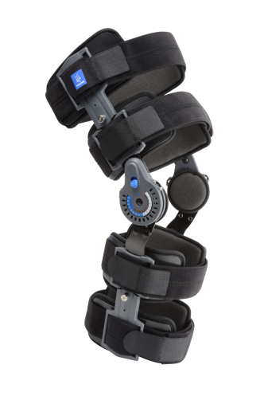
Articulaciones policéntricas regulables en flexo-extensión con barras de duraluminio aeronáutico y almohadillas transpirables termoformadas para control de ligamentos cruzados (LCA/LCP).
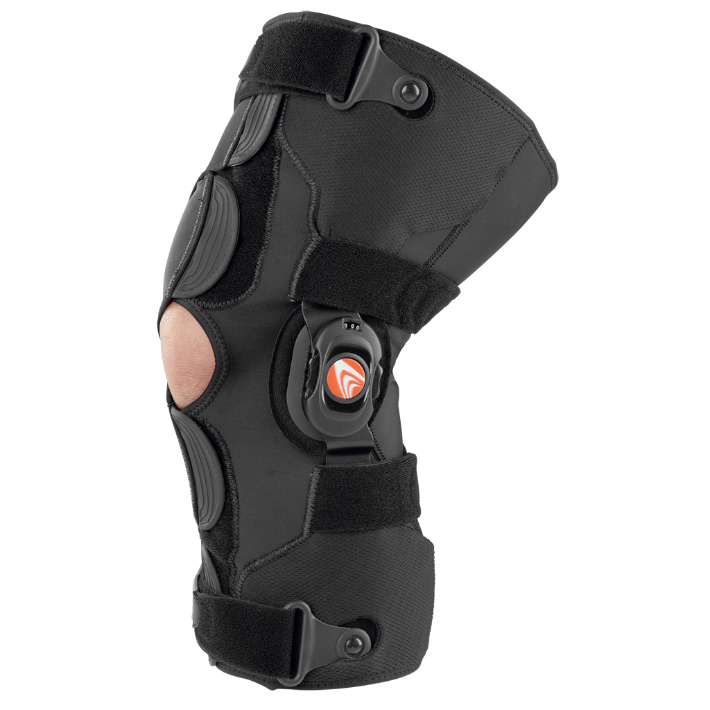
Sistema correctivo biomecánico de 3 puntos de palanca para artrosis de rodilla grado I-IV, aliviando de forma focalizada la sobrecarga sobre el compartimento medial.
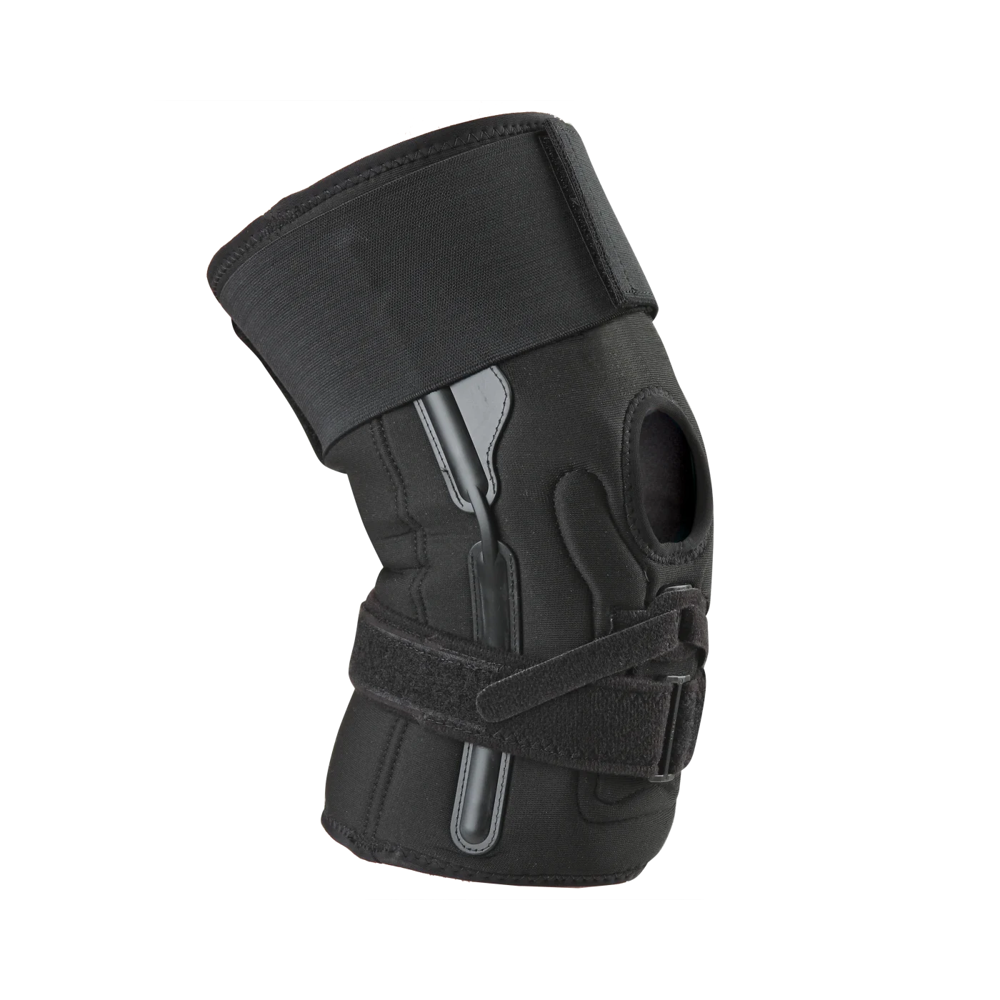
Rodillera deportiva con anillo de silicona de alta densidad para control de la rótula y contención en tendinitis rotuliana o condromalacia leve durante la actividad física.
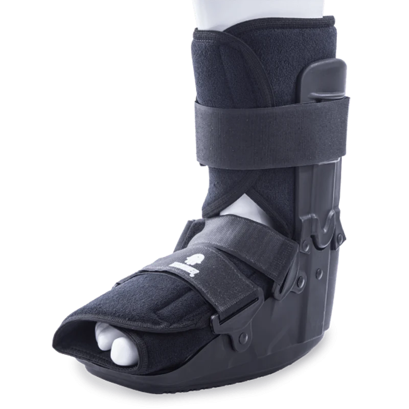
Diseño ultraligero en fibra de carbono preimpregnado con retorno elástico optimizado para la marcha en pacientes con caída de pie o secuelas neurológicas.
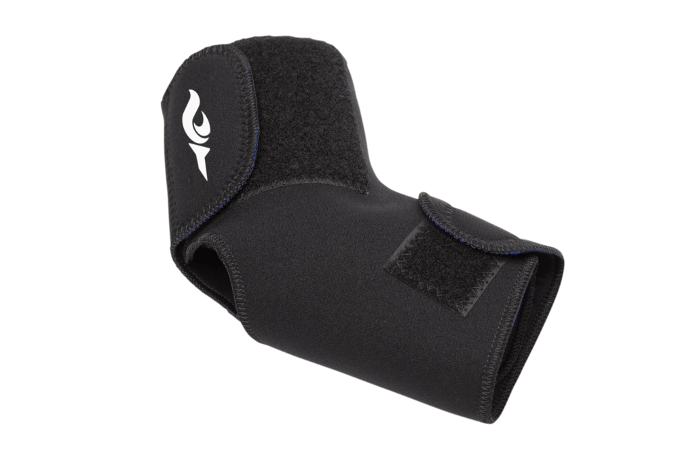
Valvas laterales rígidas anatómicas con forro de gel frío para esguinces severos de grado II y III, evitando movimientos de inversión y eversión forzada.
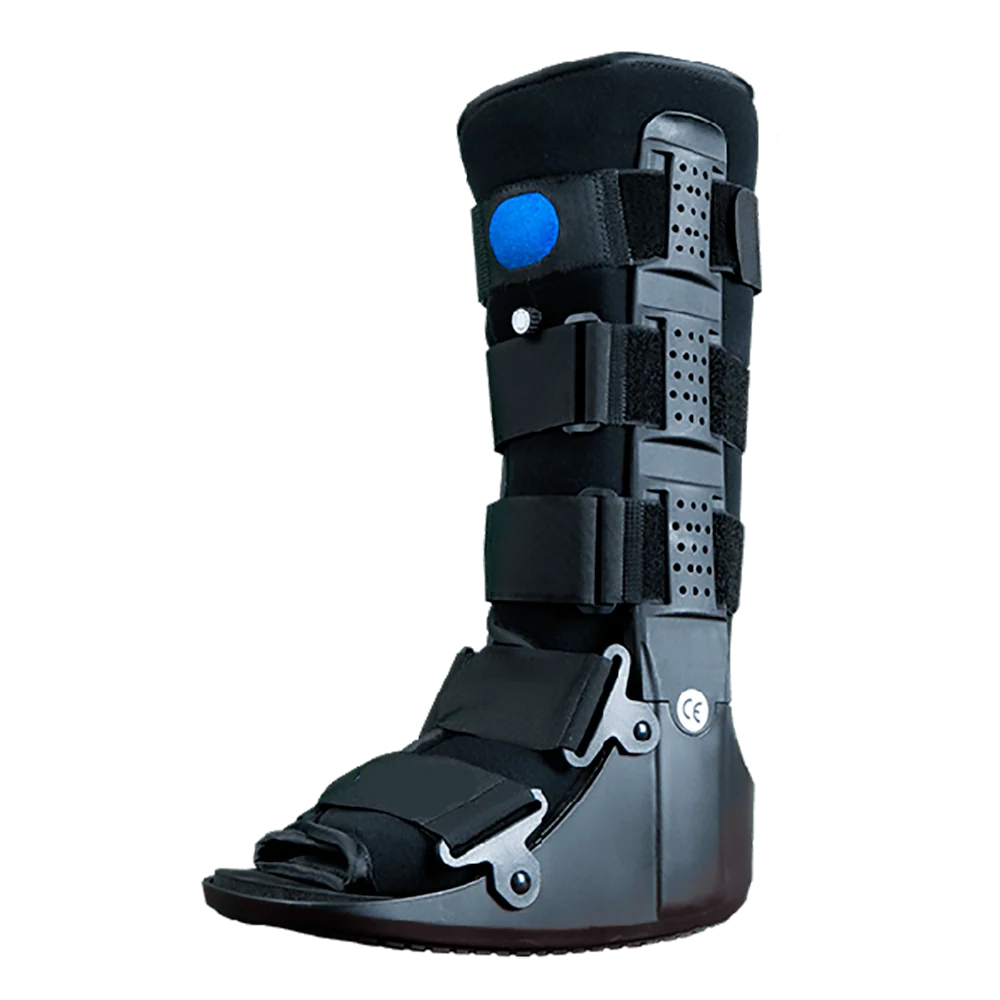
Estructura rígida de soporte tibial con suela mecedora antideslizante para inmovilización post-operatoria de fracturas de tobillo, pie y lesiones de tejidos blandos.
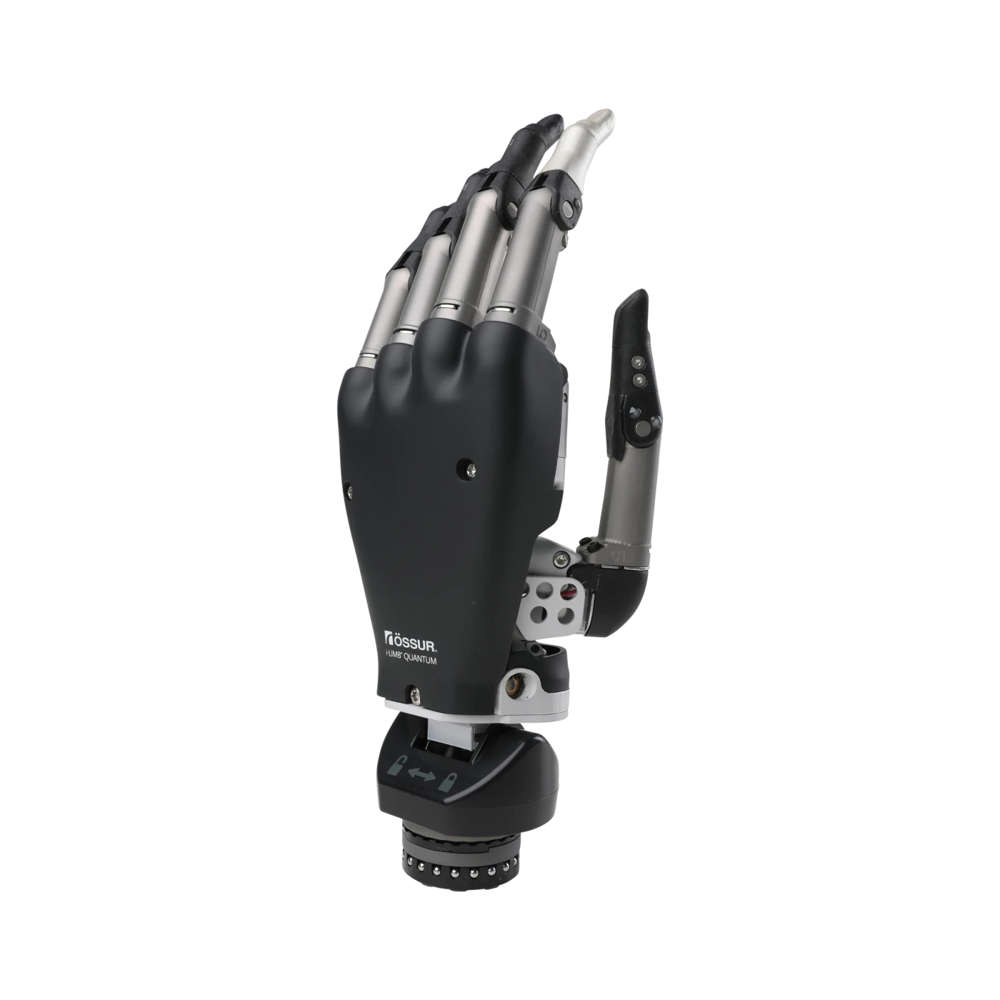
5 motores independientes controlados por señales mioeléctricas superficiales del muñón con 14 patrones de agarre programables vía aplicación clínica inalámbrica.
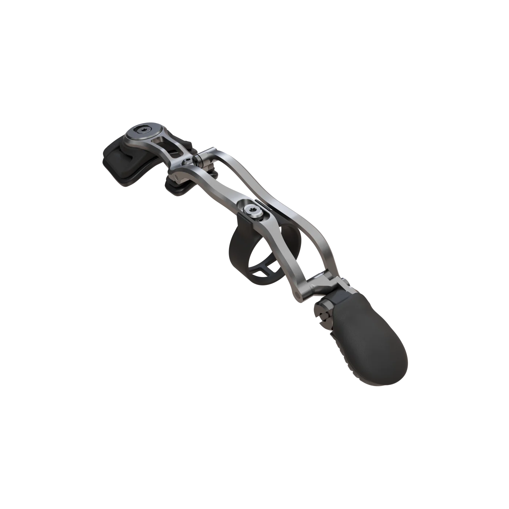
Socket ergonómico de silicona biomédica con electrodos integrados y guante cosmético personalizado de alta fidelidad con textura cutánea natural.
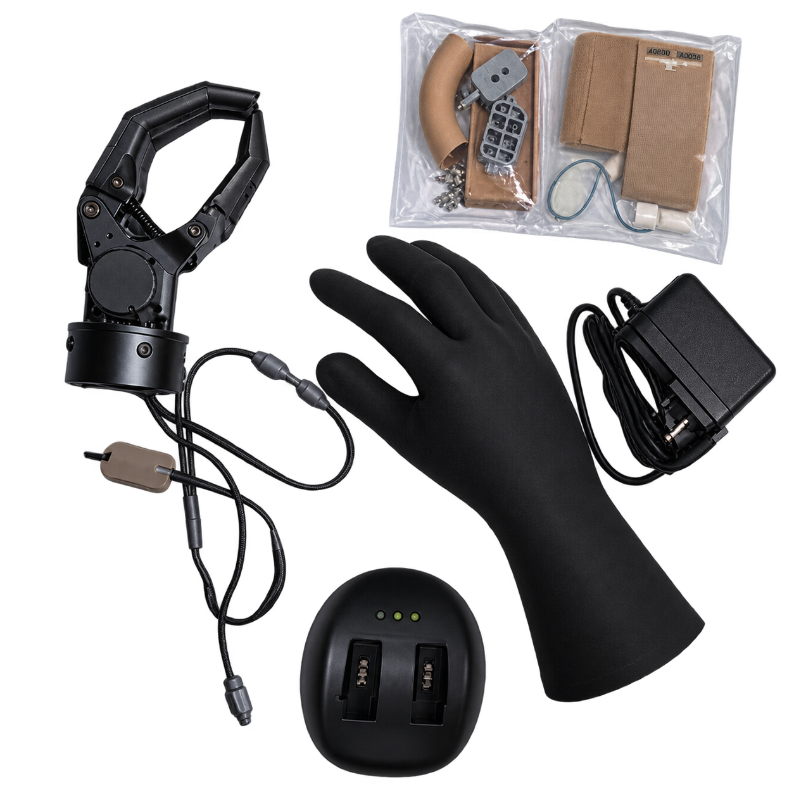
Dispositivo de accionamiento corporal mediante arnés de hombro y cable de tracción de alta resistencia, ideal para tareas de trabajo pesado y alta durabilidad.
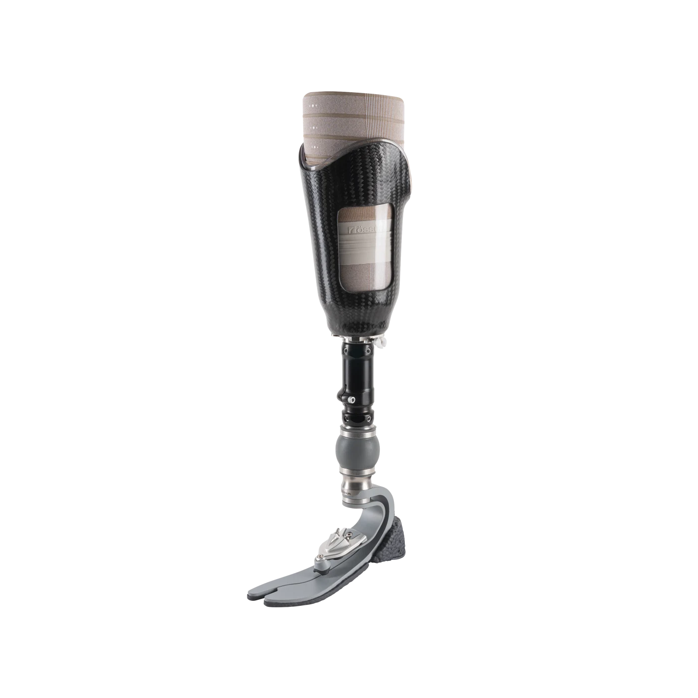
Encaje distal sellado térmicamente con suspensión activa por bomba mecánica, pie dinámico de respuesta de carbono multicapa y absorción tridimensional de impacto.
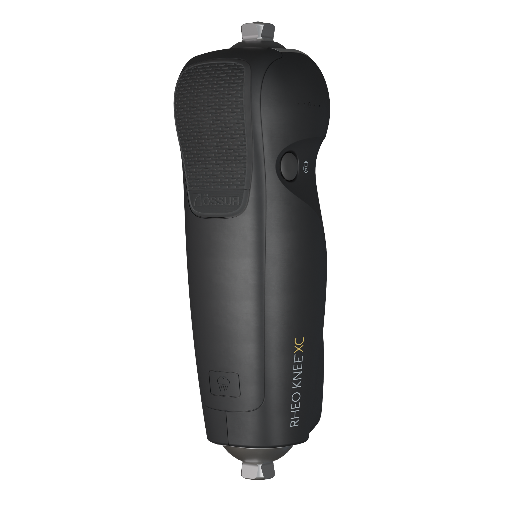
Rodilla hidráulica inteligente con microprocesadores y giroscopios en tiempo real que adaptan la cadencia y ángulo de flexión en escaleras y planos inclinados.
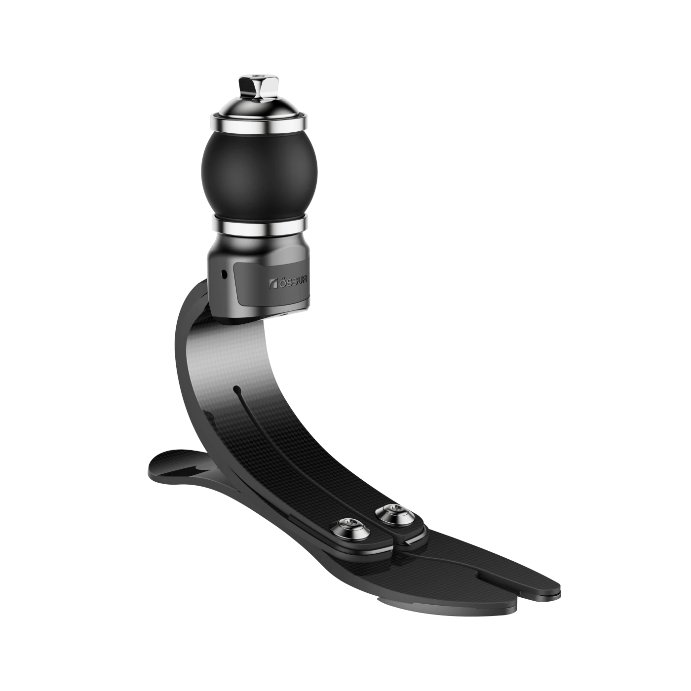
Ballesta aerodinámica de fibra de carbono aeroespacial de grado militar diseñada para atletas de alta competencia, con retorno de energía elástica certificado del 92%.
Combinamos bioingeniería alemana con modelado computacional para asegurar que cada órtesis o socket protésico elimine puntos de presión y acelere tu readaptación funcional.
Digitalización sin contacto con resolución submilimétrica.
Impresión médica en titanio y laminado en fibra de carbono.
Pruebas baropodométricas y ajuste biomecánico inmediato.
Margen máximo de tolerancia en encajes
Prototipado funcional para primera prueba
Garantía de adaptabilidad anatómica
© 2026 Ortesis&Protesis S.A. de C.V. Todos los derechos reservados.